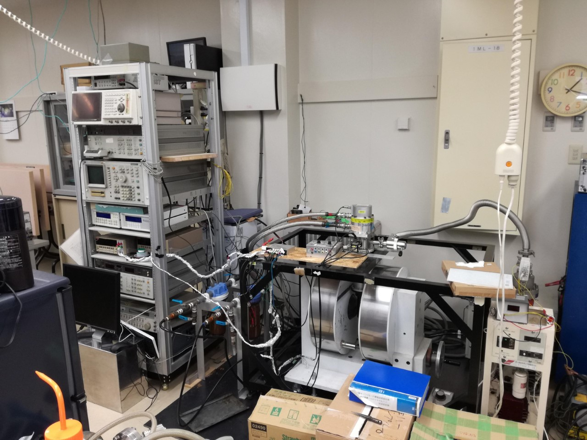

共同研究について
当研究室では、高専・大学・民間企業様との共同研究を歓迎します。このページは現在整理中です。
・10K-300Kの範囲での電気特性測定（抵抗率，ホール効果測定，磁気抵抗効果測定など）。
・原子間力顕微鏡による表面形状観察。
・透過率・反射率測定（装置を新規に導入中）。
・ラマン散乱分光装置（装置を新規に導入中）。
・透過率・反射率測定（装置を新規に導入中）。
「予想外のトラブルはつきもので，電気特性をしたいのにオーミック接触を取れない，とか問題も起きると思いますがトライしていきたいと思います。学会発表などに繋がっていけばいいなと思っています。」
当研究室との共同研究に興味のある方は先ずは、大前 oomae[at]kushiro-ct.ac.jpまでご一報ください。
低温ホール効果測定システム

キャリアの型、キャリア濃度、移動度の評価にはホール効果測定ができます。
電磁石により最大1Tを半導体試料に印加できる。また冷凍機により10K－300Kの温度制御が可能です。これまで半導体，金属，半金属，強磁性金属の特性評価に使ってきました。
(C) 2014- 釧路工業高等専門学校 創造工学科 エレクトロニクスコース 機能材料研究室. All rights reserved.